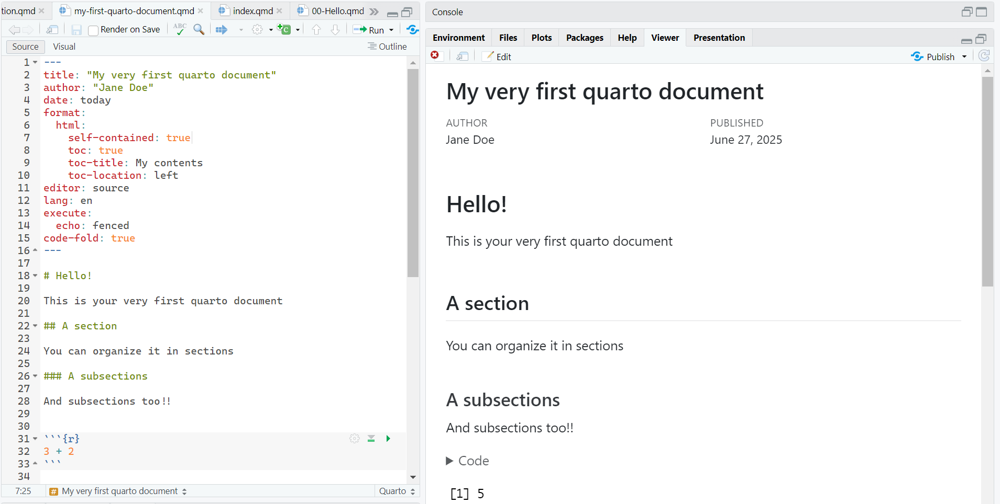
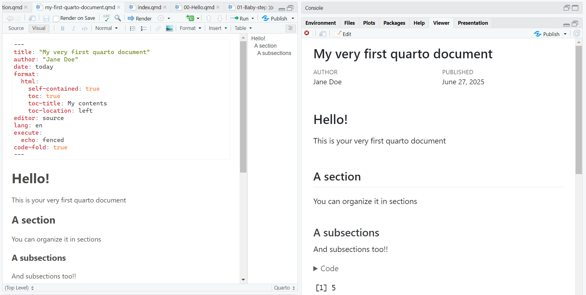
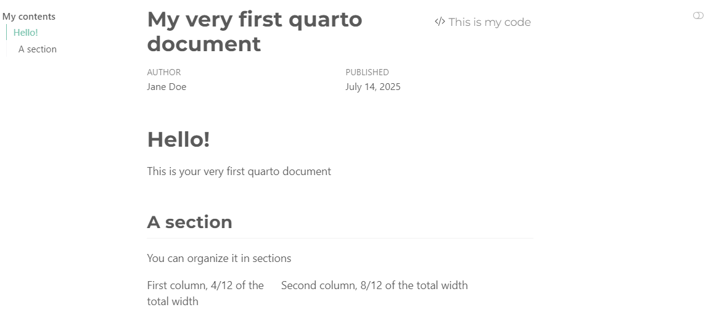
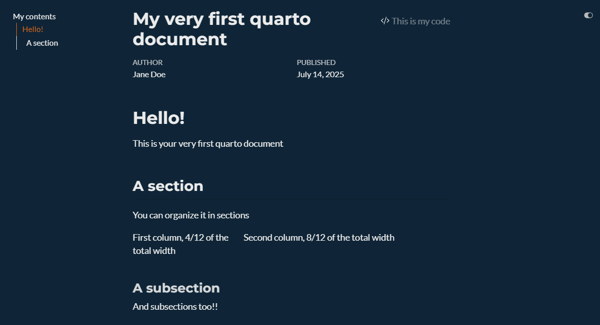
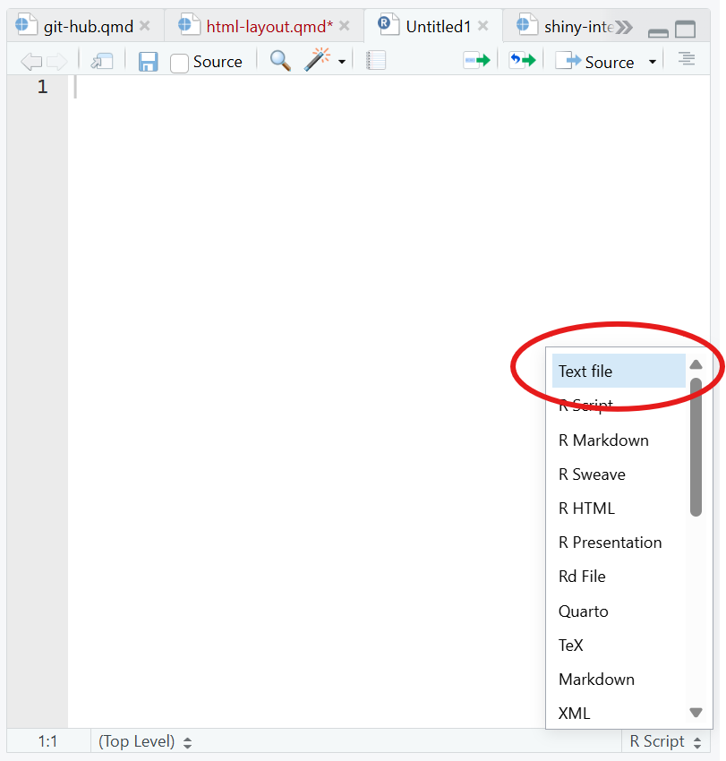

HTML document: Layout
1 YAML
The overall appearance and behavior of the document is specified in the YAML.
Importantly the YAML defines the extension of the file rendering:
HTML default YAML
---
title: "Untitled"
format: html
editor: visual
---
PDF default YAML
---
title: "Untitled"
format: pdf
editor: visual
---1.1 editor
Quarto (as well as as RMarkdown) allows for visualizing the text editor as a WYSIWYG text editor:
1.2 editor: source
1.3 editor: visual

Warning
Although at the very beginning, the use of the visual editor might be tempting, don’t indulge! Using the source editor is an investiment in your future programming skills :)
1.4 toc
Table Of Ccontents: Defines the index of your document and its associated characteristics (e.g., where it is located):
---
title: "My quarto file"
author: "Jane Doe"
date: today
format:
html:
toc: true
toc-title: My contents
toc-location: left
---Be mindful of the indentation!! With the wrong indentation, the YAML breaks down and the document will not compile.
toc: true: Set the table of contents
toc-title: My contents: Define the title of the toctoc-location: left: Define the position of the toc (options:left,right,body)
1.5 Themes
The default theme of the document can be modified with the predefined themes
---
title: "My quarto file"
author: "Jane Doe"
date: today
format:
html:
toc: true
toc-title: My contents
toc-location: left
theme: superhero
fontsize: 32px
lang: it
---The theme can be defined with the theme: specific_theme in the YAML. Further customization can be brought with other YAML arguments (e.g.,fontsize) or with specific css settings
The theme can adapt to specific settings, such as whether you want both ligth and dark theme:
---
format:
html:
theme:
light: minty
dark: superhero
---1.6 Day

1.7 Night

1.8 lang
Set the language for your document. This is not the autocorrect!
It sets the language to be used in the cross-referencing of your document (see Section 4).
| Language | Code |
|---|---|
| English | en |
| Chinese | zh |
| Spanish | es |
| French | fr |
| Japanese | ja |
| German | de |
| Language | Code |
|---|---|
| Portuguese | pt |
| Russian | ru |
| Czech | cs |
| Finnish | fi |
| Dutch | nl |
| Italian | it |
| Polish | pl |
| Korean | ko |
2 Markdown formatting
2.1 Headings
The number of # defines the level of the headings (the lower the number of #, the higher the level)
# First level (H1)Section
## Second level (H2)Subsection
### Third level (H3)Sub-subsection
#### Fourth level (H4)Paragraph
##### Fifth level (H5)I frankly have never used that
##### Sixth level (H6)I have no idea
2.2 Text Formatting
The text formatting is defined through specific tags:
2.2.1 Formatting
*italics*, **bold**, ***bold italics*** italics, bold, bold italics
2.2.2 Super/sub script
textsuperscirpt^2^, textunderscript~2~textsuperscirpt2, textunderscript2
2.2.3 In line code
`this is myinline code`this is myinline code
Code chunk
There will be a specific lesson on the code chunks
2.3 Links and images
<https://github.com/>My link is [here](https://github.com/)My link is here
2.4 Lists
* Main Unordered List
+ First sub-item
+ Second sub-item
- It's getting weird- Main Unordered List
- First sub-item
- Second sub-item
- It’s getting weird
1. Main ordered list
2. Second item
i) First sub-item 1
A. First sub-sub-item 1- Main ordered list
- Second item
- First sub-item 1
- First sub-sub-item 1
- First sub-item 1
- [ ] First things first 1
- [ ] Second things second 22.5 Math
In-line math:
This is an in-line equation $y = \beta_0 + \beta_1 X + \varepsilon$This is an in-line equation \(y = \beta_0 + \beta_1 X + \varepsilon\)
Math math:
This is an equation $$z = \dfrac{\bar{x} -\mu}{\sigma}$$This is an equation \[z = \dfrac{\bar{x} -\mu}{\sigma}\]
2.6 References
Define the path of the bib file in the YAML
[...]
bibliography: bib/references.bibThen set your file with .bib extension. This file can be created with any text editor, including RStudio.
To use RStudio as a text editor>
Open a new script:
shift + ctrl + n
Set it to be a text file:

- Prepare bigliography
@Manual{rsoft,
title = {R: A Language and Environment for Statistical Computing},
author = {{R Core Team}},
organization = {R Foundation for Statistical Computing},
address = {Vienna, Austria},
year = {2025},
url = {https://www.R-project.org/}
}
@Book{ggplot,
author = {Hadley Wickham},
title = {ggplot2: Elegant Graphics for Data Analysis},
publisher = {Springer-Verlag New York},
year = {2016},
isbn = {978-3-319-24277-4},
url = {https://ggplot2.tidyverse.org}
}
@article{epifania2024,
title={A guided tutorial on linear mixed-effects models for the analysis of accuracies and response times in experiments with fully crossed design.},
author={Epifania, Ottavia M and Anselmi, Pasquale and Robusto, Egidio},
journal={Psychological Methods},
year={2024},
publisher={American Psychological Association},
doi={https://doi.org/10.1037/met0000708}
}Mendeley, Zotero and similar software have built-in function for exporting the bib file. Read the related documentation
To call a reference:
@citaton-key2.7 Citation keys
| Key | Output |
|---|---|
@ggplot does this |
Wickman (2016) does this |
ggplot2 is an interesting package [@ggplot2] |
ggplot2 is an interesting package (Wickman, 2016) |
bla bla bla [@epifania2024; @ggplot2] |
bla bla bla (Epifania et al., 2024; Wickman, 2016) |
3 Document layout
3.1 Columns
:::: {.columns}
::: {.column width="40%"}
I want some text in the left column
:::
::: {.column width="60%"}
And a picture in the right one
:::
::::I want some text in the left column
And a picture in the right one
The columns are most convenient in presentation files, while the grid (see Section 3.2) is the besty option for changing the layout of a text document
3.2 Grid
The document length is organized in 12 columns of equal width. This allows for a convenient and flexible environment for aligning the content.
The margins (left and right) are not counted within the 12-column space:
::: {.grid}
::: {.g-col-3}
Everything is fine
:::
::: {.g-col-2}
until
:::
::: {.g-col-5}
the sum of the grid length is equal (or inferior) to 12
:::
:::Everything is fine
until
the sum of the grid length is equal (or inferior) to 12
3.3 Tabset panel
::: {.panel-tabset}
## Aim
Here I present the aim of the study
## Methods
Here I present the methods used to pursue the aim
## Results
And here I present the results
:::Here I present the aim of the study
Here I present the methods used to pursue the aim
And here I present the results
3.4 Margins
Allows for placing images, code, references or equations in the margin of a document
For instance, I'm writing a document about peacocks, and I want a picture of a peacock and a little bit of text in the margin of the document, aligned with this text.
::: {.column-margin}
I want this picture displayed in the margin

:::For instance, I’m writing a document about peacocks, and I want a picture of a peacock and a little bit of text in the margin of the document, aligned with this text.
I want this picture displayed in the margin

Even references can be placed in the margin, such that they appear alongside the text where they are cited.
Starting with the right settings in the YAML:
bibliography: biblio.bib
reference-location: margin
citation-location: marginThese lines of code force the citations to appear in the right margin. The citation key can happen as usual.
I want to cite the `ggplot2` package because it is the best package ever [@ggplot2]I want to cite the ggplot2 package because it is the best package ever (Wickham 2016)
Wickham, Hadley. 2016. Ggplot2: Elegant Graphics for Data Analysis. Springer-Verlag New York. https://ggplot2.tidyverse.org.
3.5 Callout blocks
:::{.callout-tip}
## Title of the tip
These are my two cents for you
:::
:::{.callout-note collapse=true}
## Two cents
These are my two cents for you
:::
:::{.callout-warning icon=false}
## Pay attention
Please mind the gap
:::
:::{.callout-caution}
## Danger!
This is dangerous!
:::
Title of the tip
These are my two cents for you
Two cents
These are my two cents for you
Danger!
This is dangerous!
4 Cross referencing
Everything in quarto can be cross-referenced with the correct key.
At this page https://quarto.org/docs/authoring/cross-references.html you can find all the details and help for a correct use of cross-referencing.
Label definition in the object to be referenced
{#obj-label}Label referencing in text
@obj-labelRemember that the cross reference label depends on the language that has been set in the YAML (Section 1.8).
In Figure 1 there’s a nice chameleon.
In Equation 1 we have an equation.
\[y = \beta_0 + \beta_1X_1 + \varepsilon \tag{1}\]
Section 1.8 present the language definition throughout a document. Sections, subsections etc. are all cross-referenced with the prefix sec
It is also possible to cross reference R code, tables, and graphical output obtained from R code. These options are presented in the Code Chunk section.